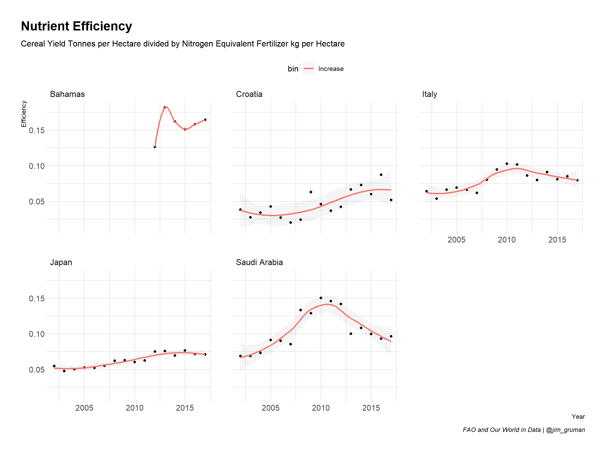
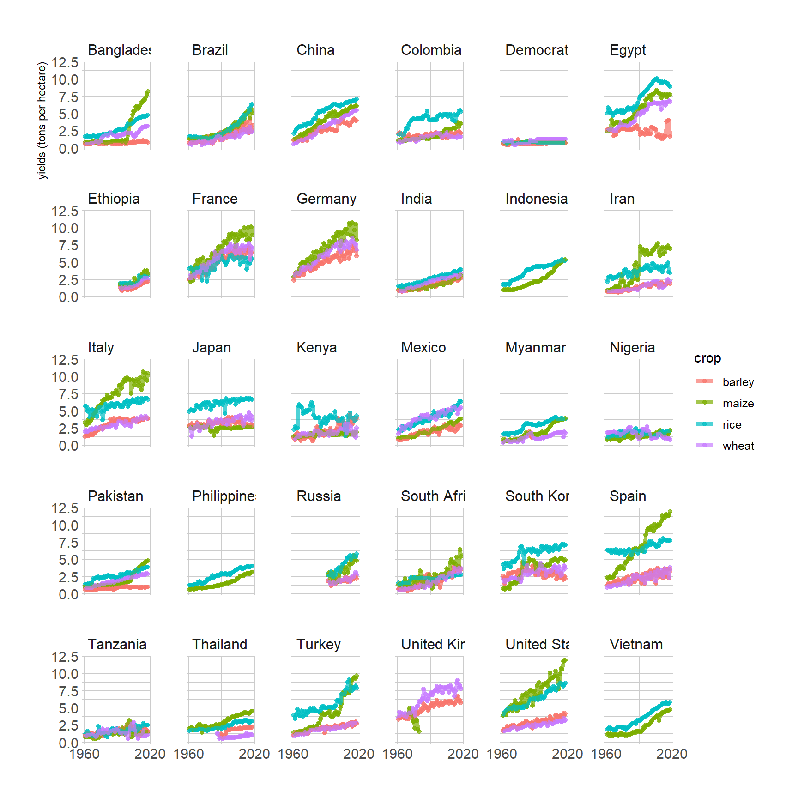
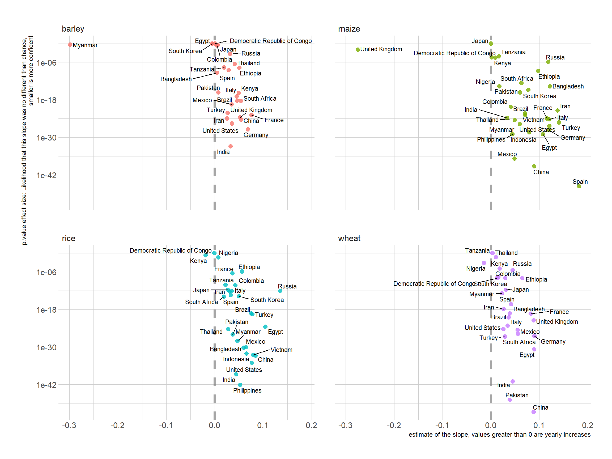

Last updated: 2020-09-07
Checks: 7 0
Knit directory: myTidyTuesday/
This reproducible R Markdown analysis was created with workflowr (version 1.6.2). The Checks tab describes the reproducibility checks that were applied when the results were created. The Past versions tab lists the development history.
Great! Since the R Markdown file has been committed to the Git repository, you know the exact version of the code that produced these results.
Great job! The global environment was empty. Objects defined in the global environment can affect the analysis in your R Markdown file in unknown ways. For reproduciblity it’s best to always run the code in an empty environment.
The command set.seed(20200907) was run prior to running the code in the R Markdown file. Setting a seed ensures that any results that rely on randomness, e.g. subsampling or permutations, are reproducible.
Great job! Recording the operating system, R version, and package versions is critical for reproducibility.
Nice! There were no cached chunks for this analysis, so you can be confident that you successfully produced the results during this run.
Great job! Using relative paths to the files within your workflowr project makes it easier to run your code on other machines.
Great! You are using Git for version control. Tracking code development and connecting the code version to the results is critical for reproducibility.
The results in this page were generated with repository version 43300b3. See the Past versions tab to see a history of the changes made to the R Markdown and HTML files.
Note that you need to be careful to ensure that all relevant files for the analysis have been committed to Git prior to generating the results (you can use wflow_publish or wflow_git_commit). workflowr only checks the R Markdown file, but you know if there are other scripts or data files that it depends on. Below is the status of the Git repository when the results were generated:
Ignored files:
Ignored: .Rhistory
Ignored: .Rproj.user/
Untracked files:
Untracked: analysis/Astronaut.Rmd
Untracked: analysis/BeerProduction.Rmd
Untracked: analysis/BrainInjury.Rmd
Untracked: analysis/Coffee.Rmd
Untracked: analysis/CollegeTuitionandDiversity.Rmd
Untracked: analysis/GDPRfines.Rmd
Untracked: analysis/GDPRfines_cache/
Untracked: analysis/LastAirbender.Rmd
Untracked: analysis/LastAirbender_cache/
Untracked: analysis/NFLattendance.Rmd
Untracked: analysis/StudentDebt.Rmd
Untracked: analysis/TheOffice.Rmd
Untracked: analysis/TourDeFrance.Rmd
Untracked: analysis/figure/
Untracked: code/BrainInjuryCleaningScript.R
Untracked: code/caribou.R
Untracked: code/studentdebt.R
Untracked: figure/BrainInjury.Rmd/
Untracked: figure/NFL attendance.Rmd/
Untracked: figure/TourDeFrance.Rmd/
Note that any generated files, e.g. HTML, png, CSS, etc., are not included in this status report because it is ok for generated content to have uncommitted changes.
These are the previous versions of the repository in which changes were made to the R Markdown (analysis/CropYields.Rmd) and HTML (docs/CropYields.html) files. If you’ve configured a remote Git repository (see ?wflow_git_remote), click on the hyperlinks in the table below to view the files as they were in that past version.
| File | Version | Author | Date | Message |
|---|---|---|---|---|
| Rmd | 43300b3 | opus1993 | 2020-09-07 | wflow_publish(“analysis/CropYields.Rmd”) |
Join the R4DS Online Learning Community in the weekly #TidyTuesday event! Every week we post a raw dataset, a chart or article related to that dataset, and ask you to explore the data. While the dataset will be “tamed”, it will not always be tidy! As such you might need to apply various R for Data Science techniques to wrangle the data into a true tidy format. The goal of TidyTuesday is to apply your R skills, get feedback, explore other’s work, and connect with the greater #RStats community! As such we encourage everyone of all skills to participate!
Dowload the weekly data and make available in the tt object.
tt <- tt_load("2020-09-01")--- Compiling #TidyTuesday Information for 2020-09-01 ------- There are 5 files available ------ Starting Download ---
Downloading file 1 of 5: `arable_land_pin.csv`
Downloading file 2 of 5: `cereal_crop_yield_vs_fertilizer_application.csv`
Downloading file 3 of 5: `cereal_yields_vs_tractor_inputs_in_agriculture.csv`
Downloading file 4 of 5: `key_crop_yields.csv`
Downloading file 5 of 5: `land_use_vs_yield_change_in_cereal_production.csv`--- Download complete ---Take a look at the readme for the weekly data to get insight on the dataset. This includes a data dictionary, source, and a link to an article on the data.
ttTake an initial look at the format of the data available.
tt %>%
map(glimpse)Rows: 11,280
Columns: 4
$ Entity <chr> ...
$ Code <chr> ...
$ Year <dbl> ...
$ `Arable land needed to produce a fixed quantity of crops ((1.0 = 1961))` <dbl> ...
Rows: 11,965
Columns: 5
$ Entity <chr> "Afghanistan", "A...
$ Code <chr> "AFG", "AFG", "AF...
$ Year <dbl> 1961, 1962, 1963,...
$ `Cereal yield (tonnes per hectare)` <dbl> 1.1151, 1.0790, 0...
$ `Nitrogen fertilizer use (kilograms per hectare)` <dbl> NA, NA, NA, NA, N...
Rows: 49,403
Columns: 6
$ Entity <chr> "Afghanista...
$ Code <chr> "AFG", "AFG...
$ Year <chr> "1961", "19...
$ `Tractors per 100 sq km arable land` <dbl> 0.1568627, ...
$ `Cereal yield (kilograms per hectare) (kg per hectare)` <dbl> 1115.1, 107...
$ `Total population (Gapminder)` <dbl> 9169000, 93...
Rows: 13,075
Columns: 14
$ Entity <chr> "Afghanistan", "Afghanistan", "A...
$ Code <chr> "AFG", "AFG", "AFG", "AFG", "AFG...
$ Year <dbl> 1961, 1962, 1963, 1964, 1965, 19...
$ `Wheat (tonnes per hectare)` <dbl> 1.0220, 0.9735, 0.8317, 0.9510, ...
$ `Rice (tonnes per hectare)` <dbl> 1.5190, 1.5190, 1.5190, 1.7273, ...
$ `Maize (tonnes per hectare)` <dbl> 1.4000, 1.4000, 1.4260, 1.4257, ...
$ `Soybeans (tonnes per hectare)` <dbl> NA, NA, NA, NA, NA, NA, NA, NA, ...
$ `Potatoes (tonnes per hectare)` <dbl> 8.6667, 7.6667, 8.1333, 8.6000, ...
$ `Beans (tonnes per hectare)` <dbl> NA, NA, NA, NA, NA, NA, NA, NA, ...
$ `Peas (tonnes per hectare)` <dbl> NA, NA, NA, NA, NA, NA, NA, NA, ...
$ `Cassava (tonnes per hectare)` <dbl> NA, NA, NA, NA, NA, NA, NA, NA, ...
$ `Barley (tonnes per hectare)` <dbl> 1.0800, 1.0800, 1.0800, 1.0857, ...
$ `Cocoa beans (tonnes per hectare)` <dbl> NA, NA, NA, NA, NA, NA, NA, NA, ...
$ `Bananas (tonnes per hectare)` <dbl> NA, NA, NA, NA, NA, NA, NA, NA, ...
Rows: 49,259
Columns: 6
$ Entity <chr> "Afghan...
$ Code <chr> "AFG", ...
$ Year <chr> "1961",...
$ `Cereal yield index` <dbl> 100, 97...
$ `Change to land area used for cereal production since 1961` <dbl> 100, 10...
$ `Total population (Gapminder)` <dbl> 9169000...$arable_land_pin
# A tibble: 11,280 x 4
Entity Code Year `Arable land needed to produce a fixed quantity of cr~
<chr> <chr> <dbl> <dbl>
1 Afghanist~ AFG 1961 1
2 Afghanist~ AFG 1962 0.984
3 Afghanist~ AFG 1963 1.01
4 Afghanist~ AFG 1964 0.939
5 Afghanist~ AFG 1965 0.907
6 Afghanist~ AFG 1966 0.927
7 Afghanist~ AFG 1967 0.832
8 Afghanist~ AFG 1968 0.812
9 Afghanist~ AFG 1969 0.792
10 Afghanist~ AFG 1970 0.876
# ... with 11,270 more rows
$cereal_crop_yield_vs_fertilizer_application
# A tibble: 11,965 x 5
Entity Code Year `Cereal yield (tonnes p~ `Nitrogen fertilizer use (kil~
<chr> <chr> <dbl> <dbl> <dbl>
1 Afghanis~ AFG 1961 1.12 NA
2 Afghanis~ AFG 1962 1.08 NA
3 Afghanis~ AFG 1963 0.986 NA
4 Afghanis~ AFG 1964 1.08 NA
5 Afghanis~ AFG 1965 1.10 NA
6 Afghanis~ AFG 1966 1.01 NA
7 Afghanis~ AFG 1967 1.22 NA
8 Afghanis~ AFG 1968 1.29 NA
9 Afghanis~ AFG 1969 1.31 NA
10 Afghanis~ AFG 1970 1.11 NA
# ... with 11,955 more rows
$cereal_yields_vs_tractor_inputs_in_agriculture
# A tibble: 49,403 x 6
Entity Code Year `Tractors per 100~ `Cereal yield (kilo~ `Total populatio~
<chr> <chr> <chr> <dbl> <dbl> <dbl>
1 Afghan~ AFG 1961 0.157 1115. 9169000
2 Afghan~ AFG 1962 0.195 1079 9351000
3 Afghan~ AFG 1963 0.258 986. 9543000
4 Afghan~ AFG 1964 0.256 1083. 9745000
5 Afghan~ AFG 1965 0.385 1099. 9956000
6 Afghan~ AFG 1966 0.511 1012. 10175000
7 Afghan~ AFG 1967 0.637 1224. 10400000
8 Afghan~ AFG 1968 0.637 1288. 10637000
9 Afghan~ AFG 1969 0.700 1310. 10894000
10 Afghan~ AFG 1970 0.699 1105. 11174000
# ... with 49,393 more rows
$key_crop_yields
# A tibble: 13,075 x 14
Entity Code Year `Wheat (tonnes ~ `Rice (tonnes p~ `Maize (tonnes ~
<chr> <chr> <dbl> <dbl> <dbl> <dbl>
1 Afgha~ AFG 1961 1.02 1.52 1.4
2 Afgha~ AFG 1962 0.974 1.52 1.4
3 Afgha~ AFG 1963 0.832 1.52 1.43
4 Afgha~ AFG 1964 0.951 1.73 1.43
5 Afgha~ AFG 1965 0.972 1.73 1.44
6 Afgha~ AFG 1966 0.867 1.52 1.44
7 Afgha~ AFG 1967 1.12 1.92 1.41
8 Afgha~ AFG 1968 1.16 1.95 1.71
9 Afgha~ AFG 1969 1.19 1.98 1.72
10 Afgha~ AFG 1970 0.956 1.81 1.48
# ... with 13,065 more rows, and 8 more variables: `Soybeans (tonnes per
# hectare)` <dbl>, `Potatoes (tonnes per hectare)` <dbl>, `Beans (tonnes per
# hectare)` <dbl>, `Peas (tonnes per hectare)` <dbl>, `Cassava (tonnes per
# hectare)` <dbl>, `Barley (tonnes per hectare)` <dbl>, `Cocoa beans (tonnes
# per hectare)` <dbl>, `Bananas (tonnes per hectare)` <dbl>
$land_use_vs_yield_change_in_cereal_production
# A tibble: 49,259 x 6
Entity Code Year `Cereal yield in~ `Change to land area~ `Total populatio~
<chr> <chr> <chr> <dbl> <dbl> <dbl>
1 Afghan~ AFG 1961 100 100 9169000
2 Afghan~ AFG 1962 97 103 9351000
3 Afghan~ AFG 1963 88 103 9543000
4 Afghan~ AFG 1964 97 104 9745000
5 Afghan~ AFG 1965 99 104 9956000
6 Afghan~ AFG 1966 91 104 10175000
7 Afghan~ AFG 1967 110 94 10400000
8 Afghan~ AFG 1968 115 92 10637000
9 Afghan~ AFG 1969 118 93 10894000
10 Afghan~ AFG 1970 99 96 11174000
# ... with 49,249 more rowsExplore the data and process it into a nice format for plotting! Access each dataset by name by using a dollarsign after the tt object and then the name of the data set.
nutrient<-tt$cereal_crop_yield_vs_fertilizer_application
nutrient_rates <- nutrient %>%
mutate(Cereal = `Cereal yield (tonnes per hectare)`,
Nitrogen = `Nitrogen fertilizer use (kilograms per hectare)`, Nitrogen = if_else(is.na(Nitrogen),0,Nitrogen),
Efficiency = Cereal / Nitrogen, .keep = "unused") %>%
filter(Efficiency < 10, !is.na(Code)) %>%
tidyr::nest(data = c(Efficiency, Nitrogen, Cereal, Year)) %>%
mutate(fit = map(.x = data,.f = ~ lm(Efficiency ~ Year, data = .))) %>%
mutate(slope = purrr::map_dbl(.x = fit, .f = ~broom::tidy(.)$estimate[2])) %>%
tidyr::unnest(data) %>%
group_by(Entity) %>%
mutate(avg_yield = mean(Cereal))%>%
ungroup()
btm<-quantile(nutrient_rates$slope, probs = c(0.2,0.8))[1]
top<-quantile(nutrient_rates$slope, probs = c(0.2,0.8))[2]
nutrient_rates<-nutrient_rates %>%
mutate(bin = case_when(
slope < btm ~ "Decrease",
slope > top ~ "Increase",
TRUE ~ "Flat"
),
Year = as.integer(Year))
nutrient_rates %>%
filter(bin %in% c("Decrease","Increase"), avg_yield>5) %>%
ggplot(aes(Year, Efficiency))+
geom_point()+
geom_smooth(aes(color = bin), method = "loess", formula = "y ~ x", alpha = 0.1)+
scale_x_continuous(n.breaks = 4)+
facet_wrap(~Entity)+
theme(legend.position = "top", plot.title.position = "plot")+
labs(title = "Nutrient Efficiency",
subtitle = "Cereal Yield Tonnes per Hectare divided by Nitrogen Equivalent Fertilizer kg per Hectare",
caption = "FAO and Our World in Data | @jim_gruman")
key_crop_yields <- tt$key_crop_yields
land_use <- tt$land_use_vs_yield_change_in_cereal_productiontop_countries<-land_use %>%
janitor::clean_names() %>%
filter(!is.na(code),
entity != "World") %>%
group_by(entity) %>%
filter(year == max(year)) %>%
ungroup() %>%
slice_max(total_population_gapminder, n = 30) %>%
pull(entity)tidy_yields<-key_crop_yields %>%
janitor::clean_names() %>%
pivot_longer(wheat_tonnes_per_hectare:bananas_tonnes_per_hectare,
names_to = "crop",
values_to = "yield") %>%
mutate(crop = str_remove(crop, "_tonnes_per_hectare")) %>%
filter(crop %in% c("wheat","rice","maize","barley"),
entity %in% top_countries,
!is.na(yield))tidy_yields %>%
ggplot(aes(year, yield, color = crop))+
geom_point(alpha = 0.7, size = 1.5)+
geom_line(alpha = 0.7, size = 1.5)+
facet_wrap(~ entity)+
scale_x_continuous(n.breaks = 2)+
labs(x = NULL, y = "yields (tons per hectare)")
we will use statistical modeling to measure the country to country differences and changes over time
library(tidymodels)-- Attaching packages ------------------------------- tidymodels 0.1.1 --v broom 0.7.0 v recipes 0.1.13
v dials 0.0.8 v rsample 0.0.7
v infer 0.5.3 v tune 0.1.1
v modeldata 0.0.2 v workflows 0.1.3
v parsnip 0.1.3 v yardstick 0.0.7 -- Conflicts ---------------------------------- tidymodels_conflicts() --
x scales::discard() masks purrr::discard()
x dplyr::filter() masks stats::filter()
x recipes::fixed() masks stringr::fixed()
x dplyr::lag() masks stats::lag()
x yardstick::spec() masks readr::spec()
x recipes::step() masks stats::step()tidy_lm<-tidy_yields %>%
nest(yields = c(year, yield)) %>%
mutate(model = map(yields, ~ lm(yield ~ year, data = .x)))
slopes <-tidy_lm %>%
mutate(coefs = map(model, tidy)) %>%
unnest(coefs) %>%
filter(term == "year") %>%
mutate(p.value = p.adjust(p.value))library(ggrepel)
slopes %>%
ggplot(aes(estimate, p.value, label = entity))+
geom_vline(xintercept = 0, lty = 2, size = 1.5, alpha = 0.7, color = "gray50")+
geom_point(aes(color = crop),alpha = 0.8, size = 2.5, show.legend = FALSE)+
geom_text_repel(size = 3)+
scale_y_log10()+
facet_wrap(~ crop)+
labs(y = "p.value effect size: Likelihood that this slope was no different than chance, \nsmaller is more confident",
x = "estimate of the slope, values greater than 0 are yearly increases")
sessionInfo()R version 4.0.0 (2020-04-24)
Platform: x86_64-w64-mingw32/x64 (64-bit)
Running under: Windows 10 x64 (build 19041)
Matrix products: default
locale:
[1] LC_COLLATE=English_United States.1252
[2] LC_CTYPE=English_United States.1252
[3] LC_MONETARY=English_United States.1252
[4] LC_NUMERIC=C
[5] LC_TIME=English_United States.1252
attached base packages:
[1] stats graphics grDevices utils datasets methods base
other attached packages:
[1] ggrepel_0.8.2 yardstick_0.0.7 workflows_0.1.3 tune_0.1.1
[5] rsample_0.0.7 recipes_0.1.13 parsnip_0.1.3 modeldata_0.0.2
[9] infer_0.5.3 dials_0.0.8 scales_1.1.1 broom_0.7.0
[13] tidymodels_0.1.1 tidytuesdayR_1.0.1 forcats_0.5.0 stringr_1.4.0
[17] dplyr_1.0.2 purrr_0.3.4 readr_1.3.1 tidyr_1.1.2
[21] tibble_3.0.3 ggplot2_3.3.2 tidyverse_1.3.0 workflowr_1.6.2
loaded via a namespace (and not attached):
[1] colorspace_1.4-1 selectr_0.4-2 ellipsis_0.3.1 class_7.3-17
[5] rprojroot_1.3-2 snakecase_0.11.0 fs_1.5.0 rstudioapi_0.11
[9] listenv_0.8.0 furrr_0.1.0 farver_2.0.3 prodlim_2019.11.13
[13] fansi_0.4.1 lubridate_1.7.9 xml2_1.3.2 codetools_0.2-16
[17] splines_4.0.0 extrafont_0.17 knitr_1.29 jsonlite_1.7.1
[21] pROC_1.16.2 Rttf2pt1_1.3.8 dbplyr_1.4.4 compiler_4.0.0
[25] httr_1.4.2 backports_1.1.9 assertthat_0.2.1 Matrix_1.2-18
[29] cli_2.0.2 later_1.1.0.1 hrbrthemes_0.8.0 htmltools_0.5.0
[33] tools_4.0.0 gtable_0.3.0 glue_1.4.2 Rcpp_1.0.5
[37] cellranger_1.1.0 DiceDesign_1.8-1 vctrs_0.3.4 nlme_3.1-149
[41] extrafontdb_1.0 iterators_1.0.12 timeDate_3043.102 xfun_0.16
[45] gower_0.2.2 globals_0.12.5 rvest_0.3.6 lifecycle_0.2.0
[49] future_1.18.0 MASS_7.3-52 ipred_0.9-9 hms_0.5.3
[53] promises_1.1.1 parallel_4.0.0 yaml_2.2.1 curl_4.3
[57] gdtools_0.2.2 rpart_4.1-15 stringi_1.4.6 foreach_1.5.0
[61] lhs_1.0.2 lava_1.6.7 cpp11_0.2.1 rlang_0.4.7
[65] pkgconfig_2.0.3 systemfonts_0.3.0 evaluate_0.14 lattice_0.20-41
[69] labeling_0.3 tidyselect_1.1.0 plyr_1.8.6 magrittr_1.5
[73] R6_2.4.1 generics_0.0.2 DBI_1.1.0 pillar_1.4.6
[77] haven_2.3.1 whisker_0.4 withr_2.2.0 mgcv_1.8-31
[81] survival_3.2-3 nnet_7.3-14 janitor_2.0.1 modelr_0.1.8
[85] crayon_1.3.4 utf8_1.1.4 rmarkdown_2.3 usethis_1.6.1
[89] grid_4.0.0 readxl_1.3.1 blob_1.2.1 git2r_0.27.1
[93] reprex_0.3.0 digest_0.6.25 httpuv_1.5.4 GPfit_1.0-8
[97] munsell_0.5.0